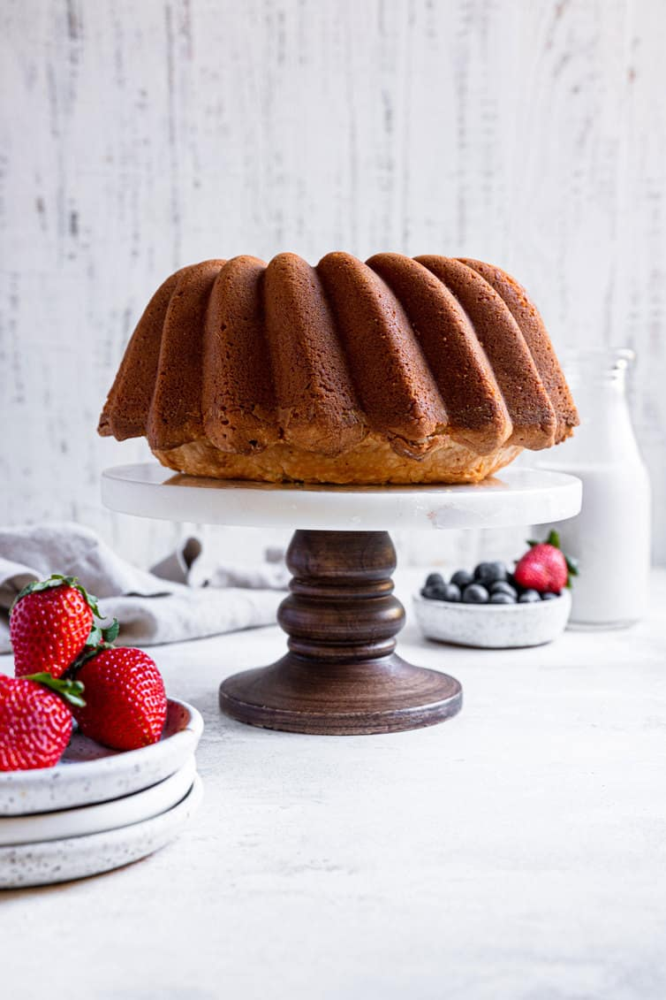
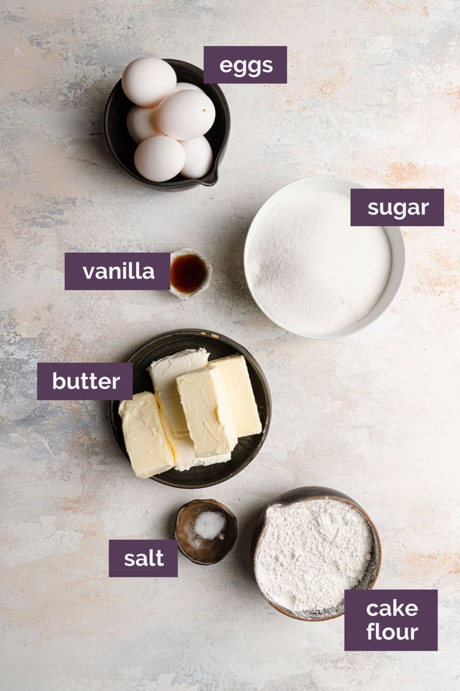
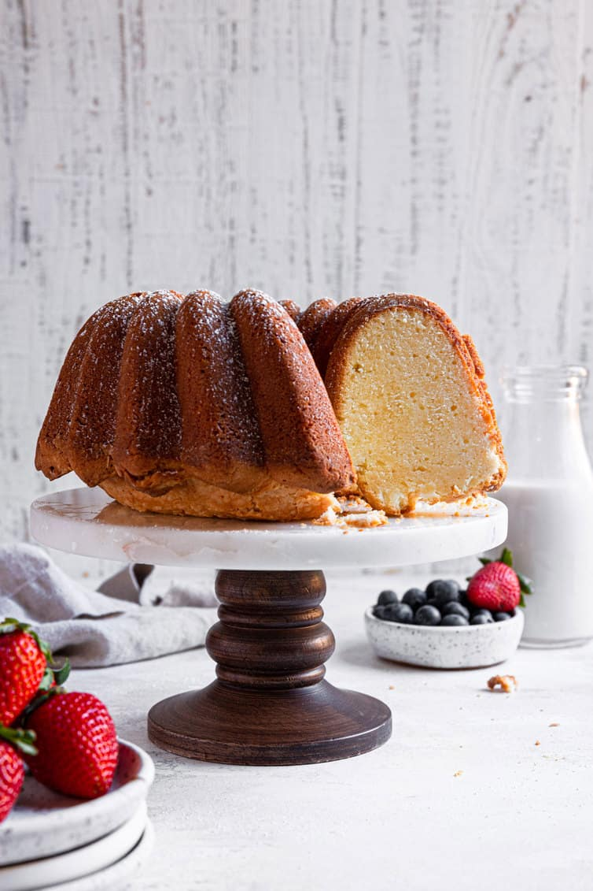

27/Aug
Cream Cheese Pound Cake
If you are looking for the perfect cream cheese pound cake recipe that turns out buttery, moist, and dense each and every time, add this year-round crowd-pleaser to your list! Using only 7 simple ingredients, this easy cream cheese pound cake will quickly become your favorite; serve plain with a sprinkle of powdered sugar or offer up homemade whipped cream and berries, or a drizzle of salted caramel or fudge sauce.

I consider a really good pound cake to be an essential for everyone's recipe box or binder; if flavored the right way, it can stand on its own, but can also be dressed up with toppings or cut up to layer in a trifle. Whether you're looking for a weeknight dessert or something everyone will love for a holiday or birthday party, this cream cheese pound cake will never let you down!

It's incredibly simple to make and while a standard pound cake does not contain cream cheese, it really adds such a tremendous amount of moisture, tenderness, and flavor, making it, in my opinion, the best ever. This is by far my absolute favorite pound cake recipe!
What exactly is a pound cake
The first traces of pound cake recipes are in northern Europe in the 1700s and it has grown across the globe since. A cake that required equal parts of flour, butter, sugar, and eggs was easy to remember in a time where many could not read a traditional cookbook. It required nothing more than a spoon and some elbow grease in the kitchen. Hundreds of years later, nearly every region is making its own version of this moist, dense cake.
In some French-speaking countries, rum is added as a Christmas Eve tradition. In both Mexico and Germany, dried fruit and liquor are added. I have some other variation ideas below, and they’re all phenomenal! Cream cheese pound cake is an American twist on the classic, and it is downright delicious.
Many modern recipes, including this one, adjust the original one pound-only proportions to accommodate some other ingredients (like cream cheese!).
Ingredients for cream cheese pound cake
It's super important for the texture of the cake that the butter, cream cheese, and eggs be at room temperature before you start mixing the cake better. This ensures that everything can emulsify and incorporate thoroughly, which gives us that moist, dense, and delicious cake!
